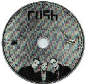
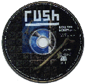
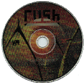

Roll The Bones
Released September 3, 1991
Atlantic/Anthem
Produced by Rush and Rupert Hine
Time/Songs:
(4:38) Dreamline
(4:56) Bravado
(5:30) Roll The Bones
(3:54) Face Up
(3:49) Where's My Thing?
(Part IV, "Gangster Of Boats" Trilogy)
(5:15) The Big Wheel
(5:26) Heresy
(5:19) Ghost Of A Chance
(4:40) Neurotica
(5:00) You Bet Your Life
Roll The Bones Tour
-
Tour Dates
The Roll The Bones tour book
Album Notes
- According to "The New Music Magazine" 11/11/91, the boy on the cover is
Michael Vander Veldt.
Neil talks about the album title:
-
Neil Peart ("Roll The Bones Radio Special"):
"'Roll The Bones' is the perfect title, because through all of the
thoughts that I go through on the album, about all these nasty things that
happen, and all these terrible things that could happen to you: a drunk in a
stolen car could run over you on your way home tomorrow night, and you could
have the best-laid plans for what you want to do, but there's still that
element of chance that it could all go wrong. But the bottom line of that
is, "Take the chance, roll the bones." If it's a random universe, and that's
terrifying and it makes you neurotic and everything, never mind. You really
have to just take the chance or else nothing's going to happen. The bad thing
might not happen but the good thing won't happen either, so that's really the
only choice you have."
Geddy talks about the making of the album:
-
You just finished a new record - how did it go for you?
Geddy Lee (October 1991):
"It was probably the fastest we've made a record in some time. We say we
made the record in 8 weeks, but we spent 10 weeks rehearsing and writing
so the recording time was quick - that's good because that's usually the
painful part."
Neil Peart told me it took a day and a half to put down all the basic
drums, which is incredible.
"We did the drums and bass tracks over a long weekend, so that was good.
It's nice to know you can do them quickly, but I don't think it really amounts
to anything. The bottom line is what you end up with, whether it takes you
a long weekend or four weeks. I don't think it matters, as long as you get
what you're after."
"Dreamline"
Dreamline
---------
He's got a road map of Jupiter
A radar fix on the stars
All along the highway
She's got a liquid-crystal compass
A picture book of the rivers
Under the Sahara
They travel in the time of the prophets
On a desert highway straight to the heart of the sun
Like lovers and hereos, and the restless part of everyone
We're only at home when we're on the run
On the run
He's got a star map of Hollywood
A list of cheap motels
All along the freeway
She's got a sister out in Vegas
The promise of a decent job
Far away from her hometown
They travel on the road to redemption
A highway out of yesterday -- that tomorrow will bring
Like lovers and heroes, birds in the last days of spring
We're only at home when we're on the wing
On the wing
WHEN WE ARE YOUNG
WANDERING THE FACE OF THE EARTH
WONDERING WHAT OUR DREAMS MIGHT BE WORTH
LEARNING THAT WE'RE ONLY IMMORTAL --
FOR A LIMITED TIME
Time is a gypsy caravan
Steals away in the night
To leave you stranded in Dreamland
Distance is a long-range filter
Memory a flickering light
Left behind in the heartland
We travel in the dark of the new moon
A starry highway traced on the map of the sky
Like lovers and heroes, lonely as the eagle's cry
We're only at home when we're on the fly
On the fly
We travel on the road to adventure
On a desert highway straight to the heart of the sun
Like lovers and hereos, and the restless part of everyone
We're only at home when we're on the run
On the run...
"Bravado"

Atlantic Promo Single (PRCD 4580-2)
Geddy's thoughts on Bravado:
-
Geddy Lee ("RTB CD Launch radio broadcast"):
"That's a pretty emotional song for me. It's one of my favorites that I
think we've ever written. Just because it's quite a change.... it's quite
a different song on the album. It's stands out on the record as being a
different texture than most of the other tracks. That line to me says
really says so much about the people, really that move the world, you know,
the people that go out there and do what has to be done. And they're not
worrying about what it's going to cost them personally down the road,
they're doing what has to be done, and they're prepared to pay the price for
it without worrying about.... the payment that comes later."
Alex talks about the solo in Bravado:
-
Alex Lifeson ("Roll The Bones Radio Special"):
"That's a special song for me, that's one of the songs that we lifted some of
the guitar parts off the demo tapes we used on the finished record. The
solo is a thrown away solo that was just a one-take solo. That song and "Roll
The Bones" and "Ghost Of A Chance", but "Bravado" and "Ghost Of A Chance",
those two solos I feel are probably among the best that I've done -- the most
emotive and the most spontaneous, and they were both one-take solos. And we
just got used to hearing them and they fit so perfectly, and the bass and the
drums kind of fit into what the solo was doing, there was really no reason to
re-record it. You could never capture that innocence and emotion in it. And
that's what it really boils down to; sound doesn't really matter, you can get
a half-decent sound on anything and enhance it and make it a little better,
but at the cost of losing the emotion. It's not worth it."
Alex Lifeson (Guitar Player, November 1991):
"The solos in "Ghost of a Chance", "Bravado" and "Roll the Bones" are
basically one- or two-take solos played all the way trough. When we're
developing the arrangement in the writing stages, I toss a solo on tape so we
have something to listen to. It's late at night, the lights are down low, and
I'm by myself. These were supposed to be throwaway solos, but when it was time
to do the "real" solos, Neil had already adjusted his parts to fit what I'd
played. So it came down to me trying to recreate everything - which doesn't
work. You might improve the sound, but even if you play exactly the same notes
you'll never capture that magic feel. The solos in "Ghost of a Chance" and
"Bravado" are certainly my favorites on the record, if not among my favorite
solos ever. When I listen to them, I heart the way I felt at that time.
That's really the key."
"Bravado" sounds very spontaneous.
"I think it was a first take. I played my Tele through the GK preamp
direct to tape. The solo has a particular character and personality that's
uncommon for me. If I'd erased that and gone with something else, then it
would have been just another solo I put together in the studio, rather than
something that happened at a special moment."
Geddy/Alex on the song:
-
Geddy Lee (Guitar Player, November 1991):
"Neil's parts are complex, too. Listen to the end of "Bravado". There's an
example of limb independence that rivals any drummer, anywhere. The fact that
he nailed taht in one take blows my mind. In only four days, Neil and I had
all the drums and bass parts down. When you record that quickly, you wonder
if maybe some ugliness will rear its head two weeks down the road. There were
only a couple of little moments that sounded a tad unsteady over all that
work; we're able to live without them. Alex did almost all the guitars in
about eight days.
Alex Lifeson:
"In the past, it took three to five weeks."
Bravado
-------
If we burn our wings
Flying too close to the sun
If the moment of glory
Is over before it's begun
If the dream is won --
Though everything is lost
We will pay the price,
But we will not count the cost
When the dust has cleared
And victory denied
A summit too lofty
River a little too wide
If we keep our pride --
Though paradise is lost
We will pay the price,
But we will not count the cost
And if the music stops
There's only the sound of the rain
All the hope and glory
All the sacrifice in vain
[And] if love remains
Though everything is lost
We will pay the price,
But we will not count the cost
"Roll The Bones"

Atlantic Promo Single (PRCD 4260-2)
Neil talks about the song:
- Neil Peart (1991):
"The song Roll the Bones is full of any number of little decisions that I had
to make about what I thought, and how best to express them and how to
introduce the idea that yes we do have free will and yes we do have choices,
and yes our choices do affect the way our fates turn out. But at the same
time, there are always these wild cards that are going to come along,
sometimes tragically, sometimes triumphantly. The motto comes down to
'Hope for the best, but prepare for the worst'."
About the "rap" section in "Roll The bones":
-
According to Neil on "Rockline", December 2, 1991: Geddy Lee does the rap
section.
Neil Peart ("Roll The Bones Radio Special"):
Yeah, that started off as a lyrical experiment for me; I was hearing
some of the better rap writers, among whom I would include like LL Cool J or
Public Enemy, musicality apart, just as writers, it was really interesting.
And it struck me that it must be a lot of fun to do that; all those internal
rhymes and all that wordplay and everything. That's meat and potatoes for a
lyricist; it's stuff you love to do and can seldom get away with being so
cute in a rock song. So I thought, "Well, I'll give it a try," and I submitted
actually I think the song "Roll The Bones" without that section to the other
guys and got them to like it, and said, "Well, I have this other thing I've
been working on, and see what you think." You know, not knowing how they'd
respond, but I'd had the fun of doing it and I've been rejected before; my
notebook's full of things that haven't made it too, so that was the situation
there. And they got excited about the idea, but then how to treat it was the
other question, and we did think of trying to get a real rapper in to do it,
and we even experimented with female voices, and ultimately found that that
treated version of Geddy's voice was the most satisfying as creating the
persona that we wanted to get across, and was also the most satisfying to
listen to. And with the female voice in it, it wasn't as nice texturally going
by, where Geddy's voice treated like that became a nice low frequency sound,
and you could listen to it just as a musical passage without having to key in
on the lyrics or anything, just let the song go by you. And it was pleasant
to the ear, so I think that was probably one of the big factors in choosing
that. We'd even been in contact with people like Robby Robertson; we thought
we'd like to try his voice on it and had contacted his office, and so on. John
Cleese we thought of; we were going to do it as a joke version, get John
Cleese in it: "Jack, relax." Get him to camp it up, but again from the
musicality and longevity factors, that would have got tired quickly; that's
the trouble with jokes.
Geddy Lee (October 1991):
"Yeah. I guess that track is something that was influenced by more of the
spoken word stuff that is going on, although I can't sit here and say I'm
a fan of rap. I like some rap things, but a lot of I don't like. I
think there's some of it that's really well done - there are some clever
people out there. But it's also not a new influence."
"People are talking about rap music like it's something new - it's not new at
all. It's been around for over a decade, if not always in one form. And
there are songs, like "Territories", where we have used a similar kind of
thing, although it was never related to rap because it wasn't the music
of the moment - so we have used spoken word sections before."
"This one is written more from Neil's point of view. The lyrics
were written very much in concert with contemporary rap music: the
way the words react against each other and the structures form more in
sympathy with what's going on in a contemporary rap way. To a degree
we are having fun with that. We couldn't make up our minds really if
we wanted to be influenced by rap or satirize it, so I think that song
kind of falls between the cracks and in the end I think it came out to
be neither, it came out to be something that is very much us."
Roll The Bones
---- --- -----
Well, you can stake that claim --
Good work is the key to good fortune
Winners take that praise
Losers seldom take that blame
If they don't take that game
And sometimes the winner takes nothing
We draw our own designs
But fortune has to make that frame
We go out in the world and take our chances
Fate is just the weight of circumstances
That's the way that lady luck dances
Roll the bones
Why are we here?
Because we're here
Roll the bones
Why does it happen?
Because it happens
Roll the bones
Faith is cold as ice --
Why are little ones born only to suffer
For the want of immunity
Or a bowl of rice?
Well, who would hold a price
On the heads of the innocent children
If there's some immortal power
To control the dice?
We come into the world and take our chances
Fate is just the weight of circumstances
That's the way that lady luck dances
Roll the bones
Jack -- relax.
Get busy with the facts.
No zodiacs or almanacs,
No maniacs in polyester slacks.
Just the facts.
Gonna kick some gluteus max.
It's a parallax -- you dig?
You move around
The small gets big. It's a rig
It's action -- reaction --
Random interaction.
So who's afraid
Of a little abstraction?
Can't get no satisfaction
From the facts?
You better run, homeboy --
A fact's a fact
From Nome to Rome, boy.
What's the deal? Spin the wheel.
If the dice are hot -- take a shot.
Play your cards. Show us what you got --
What you're holding.
If the cards are cold,
Don't go folding.
Lady Luck is golden;
She favors the bold. That's cold
Stop throwing stones --
The night has a thousand saxophones.
So get out there and rock,
And roll the bones.
Get busy!
"Face Up"
Face Up
---- --
You turn my head
I spin my wheels
Running on empty --
You know how that feels
I'm on a roll now --
Or is it a slide?
Can't be too careful
With that dangerous pride
If I could only reach that dial inside
And turn it up
FACE UP -- Or you can only back down
FACE UP -- Hit the target, or you better hit the ground
FACE UP -- There's still time to turn the game around
FACE UP -- Turn it up --
Or turn that wild card down
Turn it up
Don't complain
Don't explain
I don't think my new resolve
Can stand the strain
I'm in a groove now --
Or is it a rut?
I need some feedback
But all the lines are cut
I get so angry, but I keep my mouth shut
And turn it up
You get all squeezed up inside
Like the days were carved in stone
You get all wired up inside
And it's bad to be alone
You can go out, you can take a ride
And when you get out on your own
You get all smoothed out inside
And it's good to be alone
Turn it up
"Where's My Thing"

Atlantic Promo Single (PRCD 4126-2)
Instrumental
-
Where's My Thing was nominated and was the runner up in the Best Rock
Instrumental in the 1992 Grammy's losing to Eric Johnson's "Cliffs of Dover"
What was the reason behind writing another
instrumental?
-
Geddy Lee ("RTB CD Launch radio broadcast"):
"It's so much fun to do, too. We tried to do one on Presto.... and every
time we started writing it, you know, we played this piece of music and be
like, 'Oh. This lyric fits perfectly with it.' So we'd go off, we'd steal
from the instrumental and it would become another song. And it kept
happening over and over again. And finally Neil said, 'Okay. You keep
promising to do this instrumental, and I'm not giving you any more lyrics
until you write the thing.' So we sat down and wrote it."
Neil Peart's thoughts on
whether the single was a surpise:
- Neil Peart ("Roll The Bones Radio Special"):
Well it actually was; I was really proud of our record company, that
they released "Dreamline" as the first track and then they put out "Where's My
Thing?" for alternative stations or basically anyone who had the nerve to play
it. And it made a great alternative for college radio in the States or
alternative radio anywhere that exists, which isn't very far but at the same
time it was just a very creative thing for a record company to do, I thought.
Not just to be worried, "Ok, here's our marketing strategy," they would say,
"Let's do this because it would be fun and unusual, and the song is there." So
I thought that was really a good thing to do. A friend of ours says that it's
just another version of "Telstar" like all instrumentals are, which is funny.
And very true!
"The Big Wheel"
Neil talks about song:
- Neil Peart ("Roll The Bones Radio Special"):
"The Big Wheel" is a good example on this album; where it seems to be
autobiographical, but it's really not. It's where I've looked for a universal
of that trade-off between innocence and experience, and that song certainly
addresses that. Not in the circumstances of my own life so much, or if it is,
it's not important that it be autobiographical, that's just by the by really.
Very much I want to find universal things that others can relate to, and
that's a thing that's part of everyone's life, so I think that's probably one
reason why I'm drawn to it. And then so much of it is drawn from observing
people around me too, so that becomes a factor in it too; how they responded
to life, and how they take to it. How they adapt to that innocence and
experience thing.
The Big Wheel
--- --- -----
Well, I was only a kid -- didn't know enough to be afraid
Playing the game, but not the way the big boys played
Nothing to lose -- maybe I had something to trade
The way the big wheel spins
Well, I was only a kid, on a holy crusade
I placed no trust in a faith that was ready-made
Take no chances on paradise delayed
So I do a slow fade
PLAYING FOR TIME
Don't want to wait for heaven
LOOKING FOR LOVE
For an angel to forgive my sins
PLAYING WITH FIRE
Chasing something new to believe in
LOOKING FOR LOVE
The way the big wheel spins
Well, I was only a kid, cruising around in a trance
Prisoner of fate, victim of circumstance
I was lined up for glory, but the tickets sold out in advance
The way the big wheel spins
Well, I was only a kid, gone without a backward glance
Going for broke, going for another chance
Hoping for heaven -- hoping for a fine romance
If I do the right dance
Wheel goes round, landing on a twist of faith
Taking your chances you'll have the right answers
When the final judgment begins
Wheel goes round, landing on a leap of fate
Life redirected in ways unexpected
Sometimes the odd number wins
The way the big wheel spins
"Heresy"
Neil on the rhythm in "Heresy":
- Modern Drummer (February
1994)
A particular pattern Neil has recorded that demonstrates the value of "world
inspiration" comes from Rush's last album, Roll The Bones.
"On that record
we had a song called 'Heresy' that had a drum pattern I heard when I was in
Togo. I was laying on a rooftop one night and heard two drummers playing in
the next valley, and the rhythm stuck in my head. When we started working
on the song I realized that beat would complement it well."
Geddy on the meaning of "Heresy":
- Geddy Lee ("RTB CD Launch radio broadcast"):
"Yeah, absolutely. That horrible and wonderful moment all mixed into one
when somebody realizes that they've been, you know, had their freedom
removed for so many years, and they finally get it back. It must be such a
bitter-sweet moment. All those years.... all those lives that were lost and
all the struggle, all the people that were fighting, all the years, and
suddenly.... it's all over. And what do they do about all the people that
did not survive, who were not lucky enough to be around when the wall fell
down. It's an unanswerable question, but it's certainly one to think about."
Alex on the guitar:
- Alex Lifeson (Guitar Player, November 1991):
Occasionally we do things that are slightly out just to give a particular
character to the music. On "Heresy" [Bones] I'm playing my acoustics in the
chorus -especially the second chorus- to get a 12-string, Byrds kind of sound.
We wanted to create the effect of a buch of guys sitting around playing who
aren't quite in tune. You can hear it in the acoustic - particularly the
[Gibson] J-55, whick has a Nashville tuning. Of course you're gonna get that
kind of fluctuation anyway when you're playing high up the neck, because the
strings are so light.
Heresy
------
All around that dull gray world
From Moscow to Berlin
People storm the barricades
Walls go tumbling in
The counter-revolution
People smiling through their tears
Who can give them back their lives
And all those wasted years?
All those precious wasted years --
Who will pay?
All around that dull gray world
Of ideology
People storm the marketplace
And buy up fantasy
The counter-revolution
At the counter of a store
People buy the things they want
And borrow for a little more
All those wasted years
All those precious wasted years
Who will pay?
Do we have to be forgiving at last?
What else can we do?
Do we have to say goodbye to the past?
Yes I guess we do
All around this great big world
All the crap we had to take
Bombs and basement fallout shelters
All our lives at stake
The bloody revolution
All the warheads in its wake
All the fear and suffering
All a big mistake
All those wasted years
All those precious wasted years
Who will pay?
"Ghost of a Chance"

Atlantic Promo Single (PRCD 4458-2)
Neil reflects on his recent writings:
- Neil Peart ("Roll The Bones Radio Special"):
"Ghost of a Chance" is a perfect example; I've
always shyed away from love songs and even mentioning the word in songs
because it's so much cliche, and until I thought that I'd found a new way to
approach it, or a new nuance of it to express, I was not going to write one of
those kind of songs. "Ghost of a Chance" fit right in with my overall theme of
randomness and contingency and so on, but at the same time it was a chance for
me to write about love in a different way; of saying, "Here are all these
things that we go through in life and the people we meet, it's all by chance.
And the corners we turn and the places we go and the people we meet there."
All those things are so random and yet through all of that people do meet each
other, and if they work at it they can make that encounter last. So I'm saying
there's a ghost of a chance it can happen, and the odds are pretty much
against it, but at the same time that ghost of a chance sometimes does come
through and people do find each other and stay together.
Ghost Of A Chance
----- -- - ------
Like a million little doorways
All the choices we made
All the stages we passed through
All the roles we played
For so many different directions
Our separate paths might have turned
With every door that we opened
Every bridge that we burned
Somehow we find each other
Through all that masquerade
Somehow we found each other
Somehow we have stayed
In a state of grace
I DON'T BELIEVE IN DESTINY
OR THE GUIDING HAND OF FATE
I DON'T BELIEVE IN FOREVER
OR LOVE AS A MYSTICAL STATE
I DON'T BELIEVE IN THE STARS OR THE PLANETS
OR ANGELS WATCHING FROM ABOVE
BUT I BELIEVE THERE'S A GHOST OF A CHANCE
WE CAN FIND SOMEONE TO LOVE
AND MAKE IT LAST
Like a million little crossroads
Through the backstreets of youth
Each time we turn a new corner
A tiny moment of truth
[For] so many different connections
Our separate paths might have made
With every door that we opened
Every game we played
"Neurotica"
Neurotica
---------
You just don't get it
What it is ... well, you're not really sure
You move like you're walking on this ice
Talking like you're still insecure
Time is a spiral -- Space is a curve
I know you get dizzy, but try not to lose your nerve
Life is a diamond you turn into dust
Waiting for rescue, and I know you just
Don't get it
You just don't get it
Neurotica -- Exotica
It's just Erotica -- Hypnotica
It's just Psychotica -- Chaotica
It's just Exotica -- Neurotica
You just don't get it
Baby, don't you ask yourself why?
If you don't like the answer -- forget it
You know I hate to see you cry
Fortune is random -- Fate shoots from the hip
I know you get crazy, but try not to lose your grip
Life is a diamond you turn into dust
Looking for trust, and I know that you just
Don't get it
You just don't get it
SNAP!
Hide in your shell, let the world go to hell
It's like Russian roulette to you
SNAP!
Sweat running cold, you can't face growing old
It's a personal threat to you
SNAP!
The world is a cage for your impotent rage
But don't let it get to you
SNAP!
"You Bet Your Life"
Alex on the energy of the song:
-
In "You Bet Your Life" the delay is synced to the tempo. Did you or the
engineer do that?
Alex Lifeson (Guitar Player, November 1991):
"I did it originally, then Stephen added a little bit more DDL to one of the
other cleaner guitars to give it more energy. The song seemed quite same
as we went through different sections - something was lacking. We wanted to get
the first verse seesawing a little more. Edge, from U2, is a pro at that."
You Bet Your Life
--- --- ---- ----
Just another hunter, like a wolf in the sun
Just another junkie on a scoring run
Just another victim of the things he has done
Just another day -- in the life of a loaded gun
THE ODDS GET EVEN -- You name the game
THE ODDS GET EVEN -- The stakes are the same
YOU BET YOUR LIFE
Just another winner, pours his life down the drain
Just another island in a hurricane
Just another loser, like a cat in the rain
Just another day -- in the path of a speeding train
THE ODDS GET EVEN -- You name the game
THE ODDS GET EVEN -- The stakes are the same
YOU BET YOUR LIFE
anarchist reactionary running-dog revisionist
hindu muslim catholic creation/evolutionist
rational romantic mystic cynical idealist
minimal expressionist post-modern neo-symbolist
armchair rocket scientist graffiti existentialist
deconstruction primitive performance photo-realist
be-bop or a one-drop or a hip-hop lite-pop-metallist
gold adult contemporary urban country capitalist
Just another gypsy with a plastic guitar
Just another dancer with her eyes on the stars
Just another dreamer who was going too far
Just another drunk -- at the wheel of a stolen car
THE ODDS GET EVEN -- You name the game
THE ODDS GET EVEN -- The stakes are the same
YOU BET YOUR LIFE